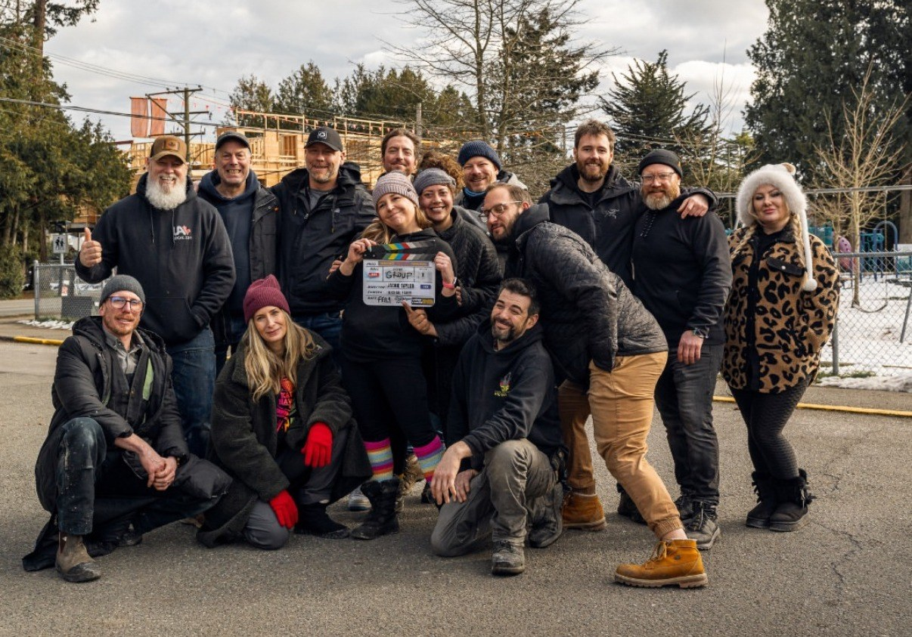
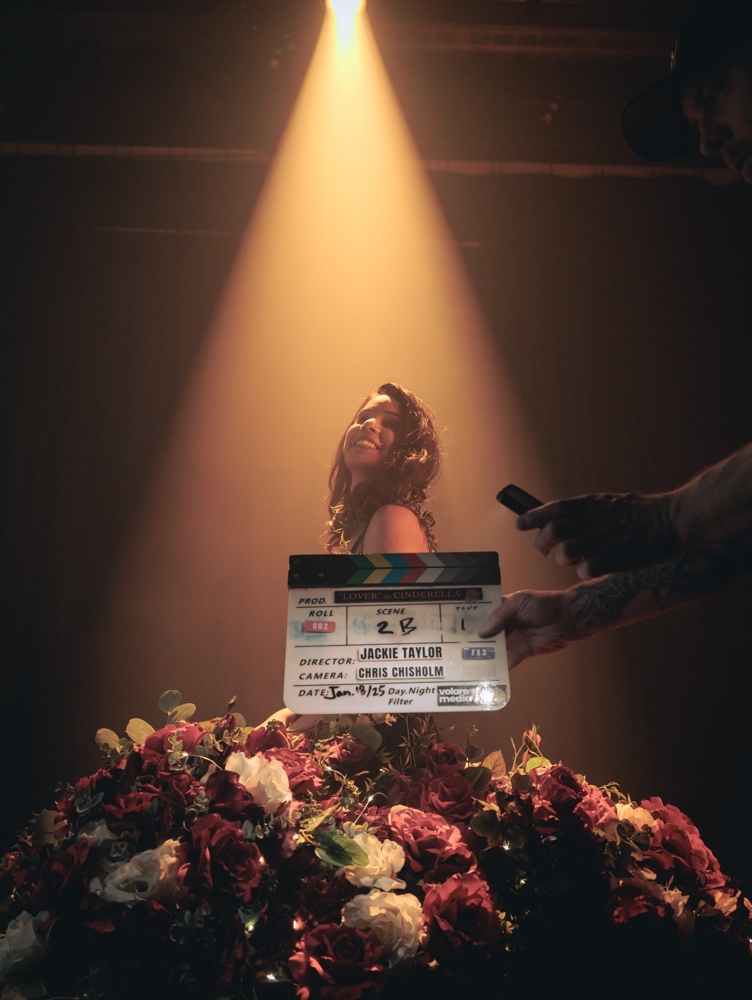

Fair treatment and clear roles aren't just ethics — they're the reason the footage looks better. "Crew-first" is the phrase we use for how Volare Media runs a set, and we believe in it so strongly that it's the first thing on our About page. This is the article about what it actually means, and why it's the best production decision we've ever made — for the crew, and for every client whose story we tell.
What crew-first actually means
It's not complicated, and that's the point:
- Clear roles. Everyone on set knows exactly what they own — camera, sound, lighting, art, direction. Nobody guesses, nobody doubles up by accident, nothing falls through the cracks.
- Fair treatment. Fair rates, reasonable days, real breaks, food and water on set. The unglamorous basics, honoured every time.
- A thoughtful crew structure. We build the crew the project actually needs — no skeleton crews stretched to breaking, no bloated call sheets padding a budget.
- Credit where it's due. Every name on the call sheet gets named. Look at the credits on our Tailgate Toolkit story — director to daycare-aged cast member, everyone's there.

Why it shows up on screen
Here's the part that matters even if you never set foot on one of our sets: the way a set feels is visible in the footage. Not mystically — mechanically.
Calm sets move faster. When roles are clear and nobody's burned out, you get more takes per hour, more coverage per day, and more room to chase the unplanned shot that ends up being the best one in the edit. Chaos eats shooting time; shooting time is your money.
Respected people volunteer their best ideas. The gaffer who suggests a better angle, the grip who spots the problem before it costs an hour — those contributions only happen on sets where people feel like partners, not equipment.
And the people on camera mirror the set around them. This is the one clients feel most. Most of the people we film aren't professional actors — they're business owners, employees, kids at their first shoot. If the set is tense, the camera sees it. If the set is warm and organized, people relax, and you get the genuine faces that make marketing video actually work.
Don't take our word for it
This is what people who've stood on our sets say — in public Google reviews, unprompted:
"The crew was so friendly and AMAZING with kids. They were well organized and professional with every step of the production." — Ashly Paquette, whose daughter was cast in her first paid commercial
"They had everything prepared; a story board, my script and a hospitality tent for their equipment & crew... I feel like I have new friends." — Sheila, It's A Doodle
"Very professional and great team to work with. Cannot wait to work on another project with them." — Derek Lewers, actor
A parent of talent, a client telling her own story on camera, and a working actor — three different seats on set, same experience. That's not an accident. That's the system working.

Where it comes from
Our roots are in film production, where good sets run on discipline: call sheets, departments, safety meetings, clear chains of decision. We brought that structure with us into marketing video — not because commercials demand it, but because it's simply the best way to make anything with a camera. The film industry also taught us what the opposite looks like, and we wanted no part of it.
What it means for your project
When you hire a production company, you're not just buying gear and editing — you're buying the conditions your story gets made under. A crew-first set means your shoot day runs on schedule, your employees and customers feel comfortable on camera, and your budget ends up on screen instead of absorbed by disorganization and re-shoots.
It's the right way to treat people. It also happens to be the smartest thing we do for our clients. Those two facts are not a coincidence.
More from the journal: How much does video production cost in British Columbia? · Taking Tailgate Toolkit to 61 stations across BC